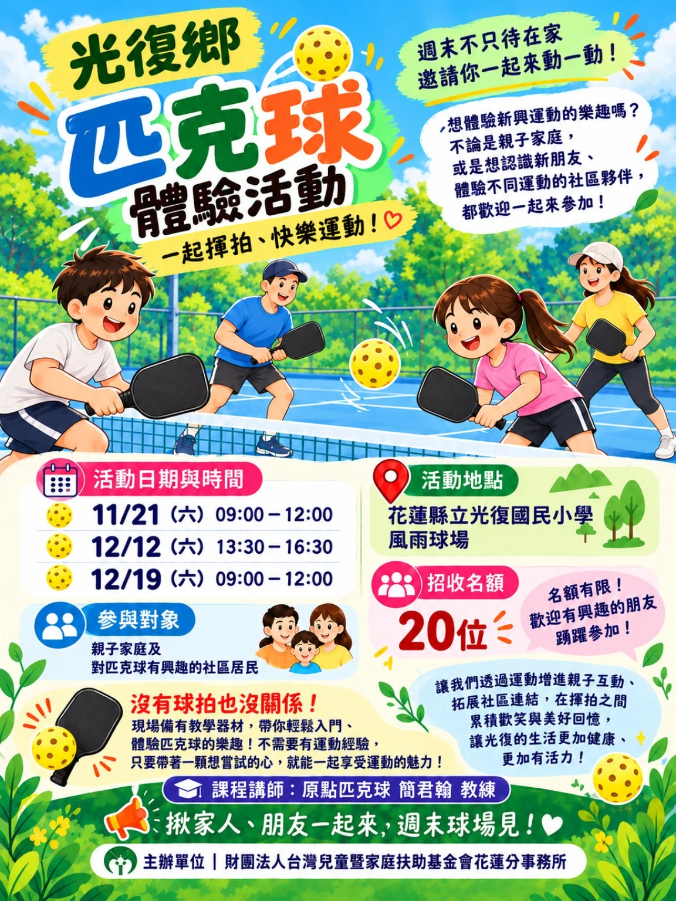

週末不只待在家，邀請你一起來動一動！
想體驗新興運動的樂趣嗎？光復彩虹工作站邀請光復鄉的大小朋友，一起來認識有趣又好玩的「匹克球」！不論是親子家庭，還是想認識新朋友、體驗不同運動的社區夥伴，都歡迎來到球場，在揮拍與歡笑中享受運動的樂趣！
活動日期與時間
- 2026/11/21（六）09:00–12:00｜體驗活動
- 2026/12/12（六）13:30–16:30｜體驗活動
- 2026/12/19（六）09:00–12:00｜當天會安排競賽互動
地點、對象與名額
- 活動地點：花蓮縣立光復國民小學｜風雨球場
- 參與對象：親子家庭及對匹克球有興趣的社區居民
- 招收名額：每場次 20 位
- 課程講師：原點匹克球 簡君翰 教練
名額有限，歡迎有興趣的朋友踴躍參加！
沒有球拍也沒關係！
現場備有教學器材，帶你輕鬆入門、體驗匹克球的樂趣！不需要有運動經驗，只要帶著一顆想嘗試的心，就能一起享受運動的魅力！
讓我們透過運動增進親子互動、拓展社區連結，在揮拍之間累積歡笑與美好回憶，讓光復的生活更加健康、更加有活力！
揪家人、朋友一起來，週末球場見！
活動報名
主辦單位｜財團法人台灣兒童暨家庭扶助基金會花蓮分事務所
活動海報

資料來源：主辦活動文案及使用者提供活動海報。
返回花蓮活動與賽事